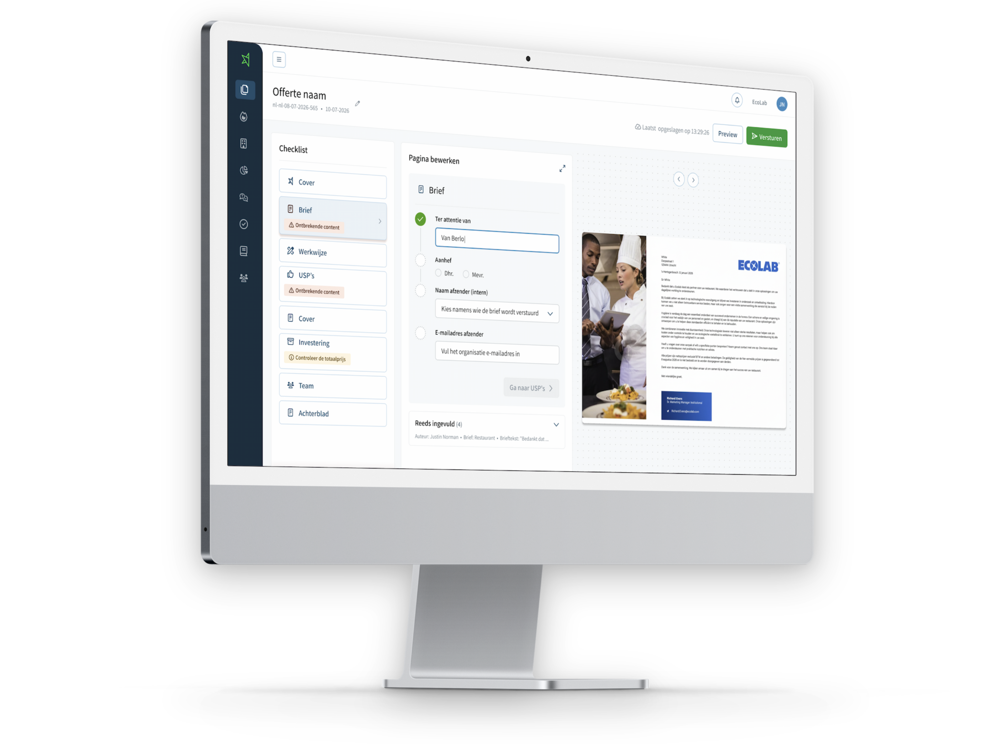

Winning Proposal B2B SaaSSenior Product Designersinds 2024
Een AI-ondersteund B2B-offerteplatform waarmee salesteams sneller sterke voorstellen maken
Ik ontwerp Winning Proposal doorlopend, van eerste onderzoeksinzichten tot gevalideerde releases. Daarbij werk ik samen met twee ontwikkelteams aan nieuwe functionaliteit.
- Van onderzoek tot livegang
- 2 teams · 12 developers
- 50+ onderzoekssessies